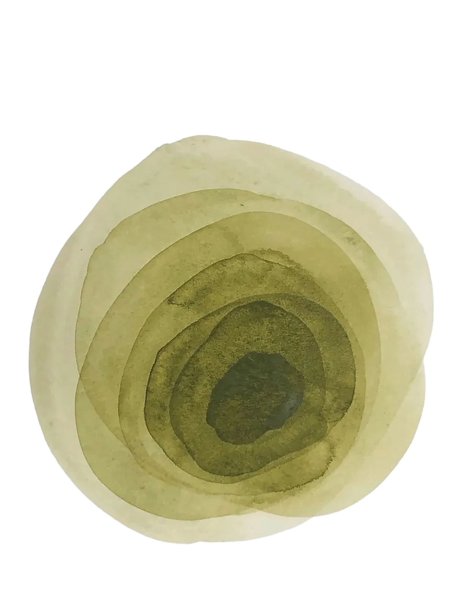
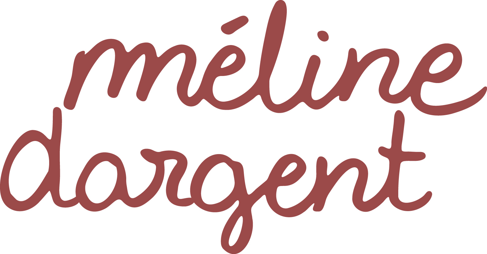
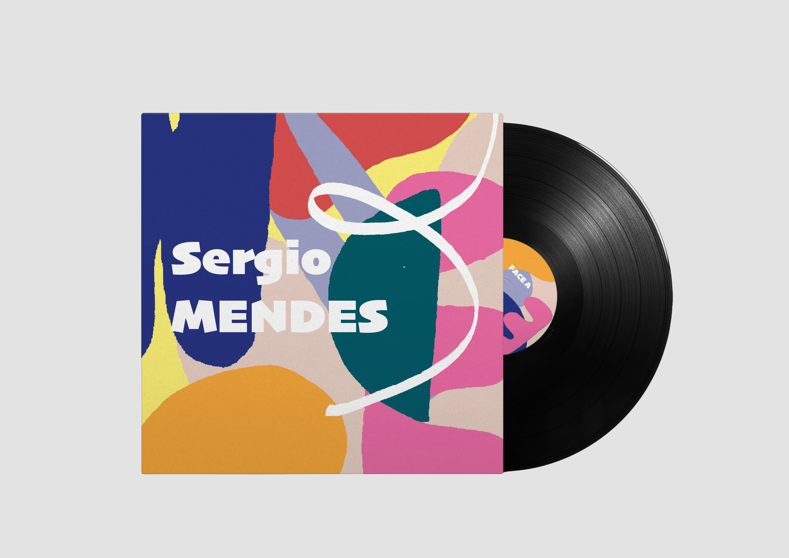
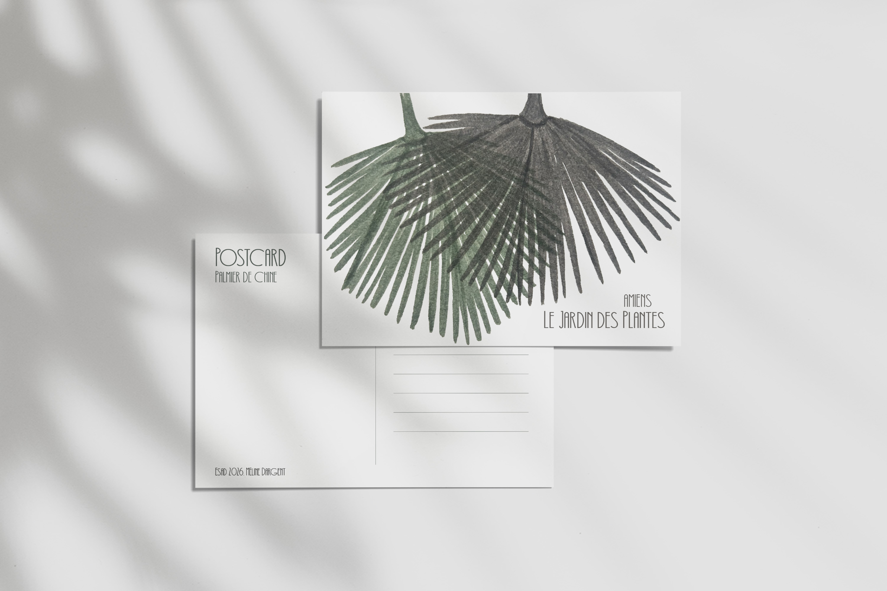
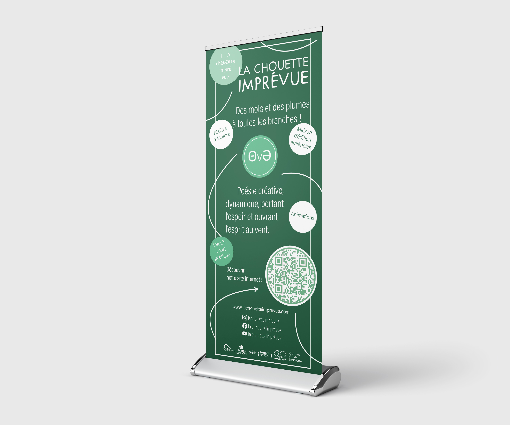
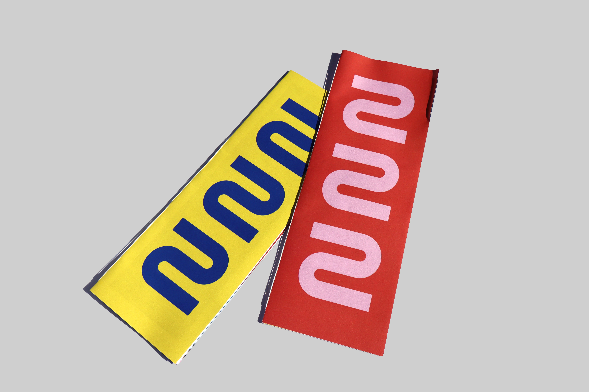
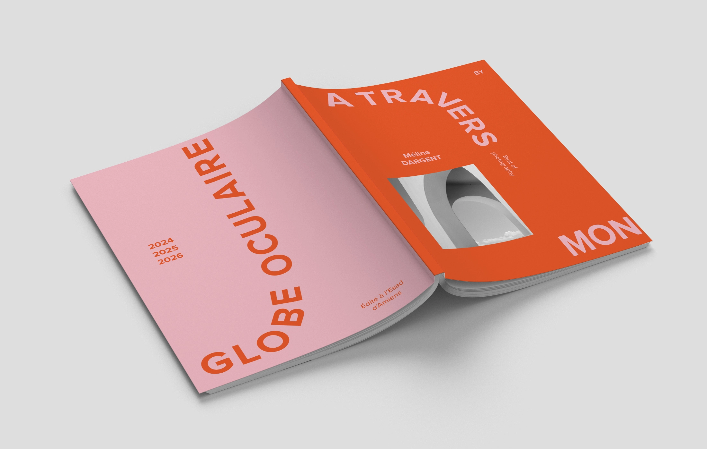

Étudiante en design graphique, je crée des visuels colorés et joyeux où se rencontrent formes géométriques, textures et techniques manuelles. Inspirée par l’aquarelle, les feutres et plus encore j’aime concevoir des univers graphiques vivants et authentiques.
 Shéhérazade Louvres Lens
Shéhérazade Louvres Lens
 Affiches poétique
Affiches poétique

Sergio Mendes
Le Jardin des plantes d’Amiens
Chouette kakémono
Museo Moderno
À travers mon globe occulaire© copyright Méline Dargent